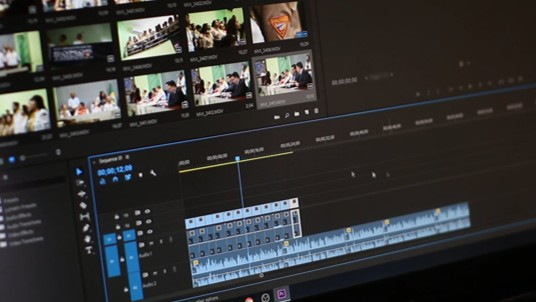
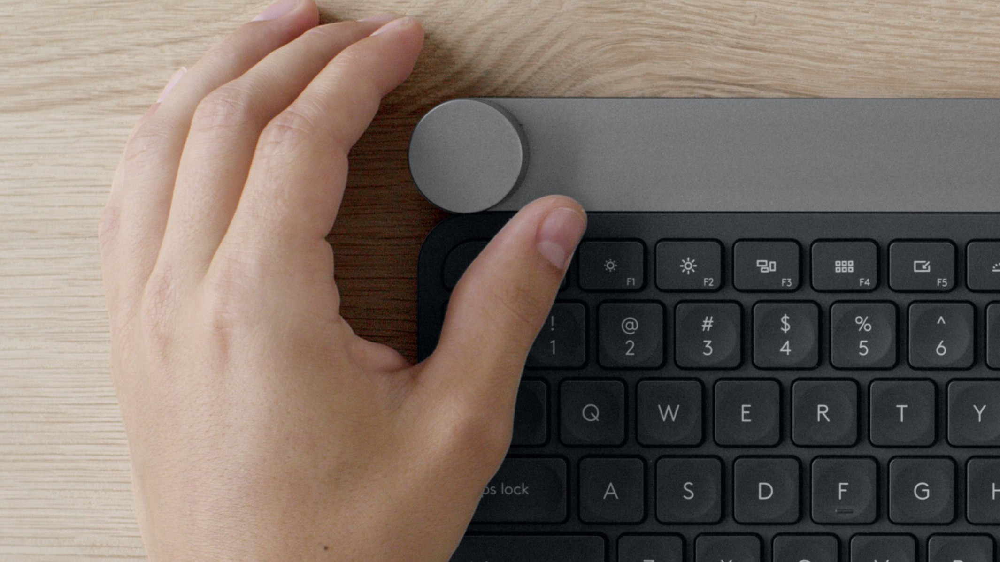
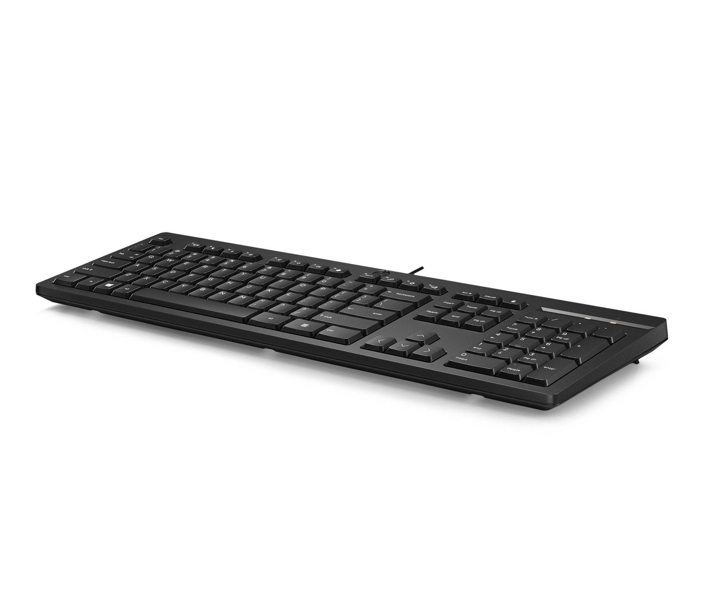

Keyboard Input Experience Research
What does a keyboard need to be in an era of creative work, hybrid collaboration, and multi-device computing? This multi-phase research program explored three distinct frontiers of keyboard input: a customizable rotary dial for creative professionals, dedicated shortcut keys for virtual collaboration, and seamless multi-device Bluetooth connectivity for knowledge workers. Across three independent studies and nearly 2,000 participants, the program built an evidence base that directly shaped product strategy — from hardware feature prioritization to icon design and out-of-box experience.
I was the lead UX researcher across all three studies, responsible for study design, screener development, participant recruitment, and synthesis. Each study addressed a distinct user need; together they formed a connected body of knowledge about where keyboard input is heading and what users expect from it.
— Lead UX Researcher
- Screener Survey Design
- Quantitative Research
- Concept Validation
- Comparative Testing
- Icon & UI Design Testing
- Feature Prioritization
- Iterative Study Design
- Actionable Recommendations
Research at a Glance
1,789
Total Participants
3
Research Studies
2
Target User Groups
Approach

Step 1. Screener Design & Participant Recruitment
To ensure participants genuinely represented the target audience, I designed a detailed screener survey before the main study. Qualification criteria focused on creative software usage (Adobe Creative Suite, Blender, Maya, CAD tools) and weekly creative hours. This segmentation was critical — it ensured that feedback on the dial concept came from users whose workflows would actually benefit from rotary input, rather than general keyboard users.

Step 2. Large-Scale Concept Validation Survey
With 574 qualified US participants, the survey validated the core dial concept and mapped the most compelling use cases. ~60–70% of creatives saw immediate value in dial-based controls, with the highest appeal in tasks involving repetitive parameter adjustments: brush size, zoom level, timeline scrubbing, and layer opacity. Top concerns centered on the learning curve for customization and setup complexity — insights that directly shaped the product's onboarding experience and default mapping strategy.
Result
574
Survey Participants
~65%
Positive Concept Reception
#1
Use Case: Creative Tool Shortcuts

Certain details have been omitted to comply with confidentiality agreements. Full research findings and deliverables are available upon request.
Spanning three research studies, this project built a holistic understanding of what creative professionals and knowledge workers need from a next-generation keyboard — from customizable dial controls and collaboration shortcuts to seamless multi-device connectivity. The findings directly shaped the dial keyboard product strategy — driving hardware switch selection, UI design language for channel keys, feature prioritization for the shortcut key set, and the design of the out-of-box pairing experience. The ChatGPT programmable key finding surfaced an AI hardware opportunity that influenced the broader keyboard roadmap.